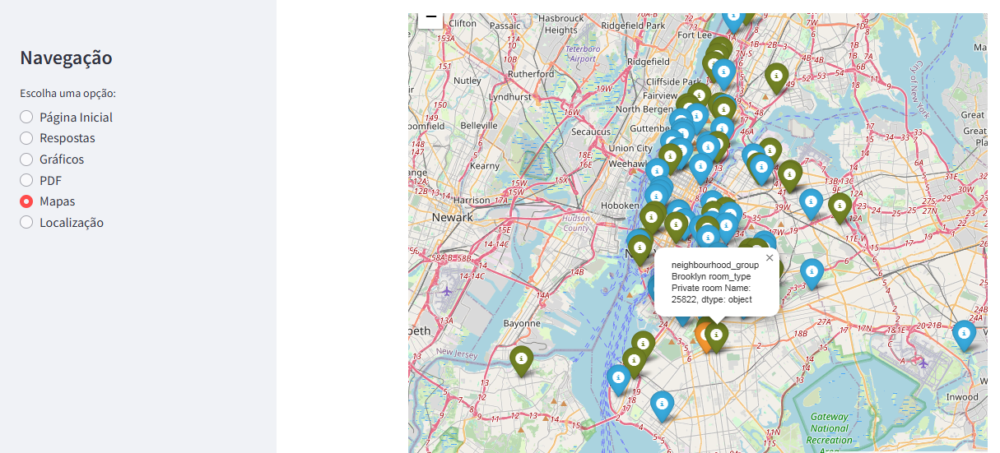

Nosso Portfólio de Projetos
Confira alguns dos projetos que concluímos com sucesso. Estes exemplos ilustram nossa capacidade de entregar soluções de desenvolvimento e implementação de alta qualidade.
Projetos Destacados
Coletor de Notícias
O "Coletor de Notícias" é um projeto que utiliza a tecnologia Streamlit para criar uma aplicação interativa que coleta e exibe notícias de várias fontes. Este projeto demonstra habilidades em Python e integração com APIs para oferecer uma experiência de usuário rica e informativa.
- Tecnologias Utilizadas: Python, Streamlit.
- Link para o Projeto: Veja o projeto ao vivo
Projeto de Análise de Dados
Desenvolvemos uma solução em Python que analisa os Dados de Hospedagem em Nova York, uma aplicação interativa desenvolvida para analisar dados de aluguéis e hospedagem na cidade que nunca dorme! Este aplicativo oferece uma análise abrangente dos dados, incluindo estatísticas, gráficos e muito mais...
- Tecnologias Utilizadas: Python, pandas, matplotlib.
- Link para o Projeto: Veja o código no GitHub
Outros Trabalhos do GitHub
Confira outros projetos disponíveis no meu GitHub. Estes trabalhos ilustram minha capacidade de criar soluções inovadoras e eficientes utilizando diversas tecnologias.
- Projeto gerador_readme - Ajuda você a criar rapidamente um README com informações com informações básicas sobre seu projeto.
- Cálculo de NPS da iFood - Análise do Net Promoter Score (NPS) da iFood Dev Week! Este projeto fornecer uma visualização dos dados de feedback.
- Projeto POWERBI_RH - Oferece uma análise detalhada dos dados de Recursos Humanos (RH).